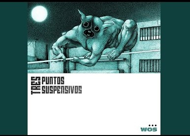

Cancionero


Alma Dinamita
WOS

Me gusta todo lo que sos y un poco más
El barrio queda sin luz cuando no estás
Las caras cambian todas cuando vos llegás
La noche te sigue mientras vos girás
Acá todos mueren por verte fumar
Tu magia está cerca y protege el lugar
Ahí voy a querer estar
Donde tu risa me saca a bailar
Cada vez que yo no me encuentro en mí, eh
Voy a vos para revivir, eh
Yo voy a estar ahí, yeh
Siempre podés venir
Ella camina con su viajero
Entre desastres y prisioneros
Cuando el destino se pone austero
Sale al rescate lo verdadero
Ella camina con su viajero
Entre desastres y prisioneros
Cuando el destino se pone austero
Sale al rescate lo verdadero
Comprensión bendita, un par de dilemas
Humanidad maldita, cuerpo que tirita
La mirada que desvela, de esas que te hielan
Gratitud finita, noches sin estrellas o con miles de ellas
Alma dinamita, voces en la cripta
Felicidad compleja, una espera escrita
Angustias bellas, onomatopeya
Río que se agita, una luz interna
Fuego que habilita lágrima que quema
Protección eterna, un amor que grita
Cada vez que yo no me encuentro en mí, eh
Voy a vos para revivir, eh
Yo voy a estar ahí, yeh
Siempre podés venir
Ella camina con su viajero
Entre desastres y prisioneros
Cuando el destino se pone austero
Sale al rescate lo verdadero
Ella camina con su viajero
Entre desastres y prisioneros
Cuando el destino se pone austero
Sale al rescate lo verdadero.